Cassidy Darkstar set out again from Dolanaar, and his road wound all about Teldrassil. He went among the Gnarlpine, and shaman and defender, warrior and pathfinder fell before him. From Gnarlpine Hold he bore away a glowing fruit for Denalan at Lake Al'Ameth. He gathered the fel cones for "Seek Redemption," six soft pelts of the nightsaber and fifteen Gnarlpine fangs for the bounty. In Darnassus, in the Temple of the Moon, he saw the errand of the "Eyes of the Sentinels" through. He went down into Fel Rock among the sprites and into Ban'ethil Barrow Den, and at the Pools of Arlithrien and along the Wellspring River he found new ground.
In The Oracle Glade he learned the fate of the lost runner, who was not dead yet. There he took six belts from the Bloodfeather harpies for "The Enchanted Glade." The Great Tree provided: water from the spring, dewy fronds from the lashers of Lake Al'Ameth, and a salve for Sentinel Eralya Leafshadow on the road to the Oracle Tree. The Emerald Dreamcatcher was found at Starbreeze Village, and after it Ferocitas the Dream Eater fell, with Harcos, Thunder and Iwill briefly at Cassidy's side, and Tallonkai's Jewel was won back. In Fel Rock the hunter Cayde and the druid Koalla stood with him a little while when Lord Melenas was slain. In The Cleft, Doom the hunter walked beside him a good stretch, Marta the warrior a shorter one, and Xethorr the Wicked was overthrown. Then Cassidy turned to Shadowglen and Aldrassil and settled "Nature's Call" and "The Goddess Provides."
The long errand of the Crown of the Earth drew him at last into Darnassus. He brought the filled vessel to Arch Druid Fandral Staghelm, the drained vessel to Lariia, and the moonwell remnants to Tyrande Whisperwind in the Temple of the Moon. In the Cenarion Enclave he answered "Heeding the Call," and the road to Moonglade was set before him. Along these roads he came into his strength, rising until he stood at the eleventh level. He had already gathered the mossy tumors near Lake Al'Ameth in the company of Subrin and Lunaria, and of Edrelyse, a druid who walked with him long. Now, returning to Denalan, he went out against Oakenscowl with the druids Kaner and Volpixi, and the gargantuan tumor was taken. Once on that road he fell, and rose, and went on.
In Ban'ethil Barrow Den, with Mil the priest as his steadiest companion and Belriel, Keiara and Hawk passing briefly, he recovered the relics of wakening. These were the Rune of Nesting, the Black Feather Quill, the Sapphire of Sky and the Raven Claw Talisman, and Greenpaw was slain there. The Sleeping Druid waited to be woken, and Ursal the Mauler waited to be sought. Last of all he came again to The Oracle Glade. With Not the warrior he overcame Hatescreech and Windmistress Gaedress, and he took up the errand of a shimmering frond for Denalan. Eo, Alara and Rhavara had also crossed his path and gone their ways. The glade lay behind him, and the road ran on toward Moonglade.
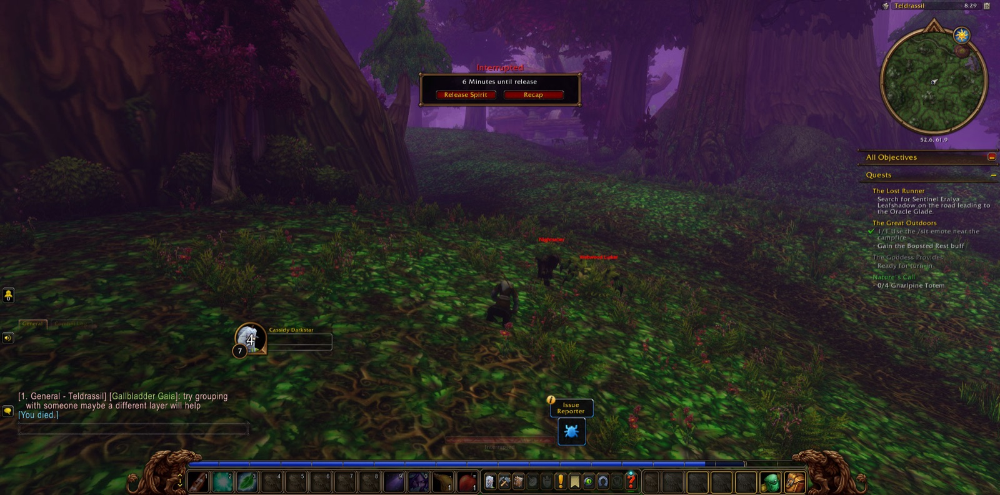
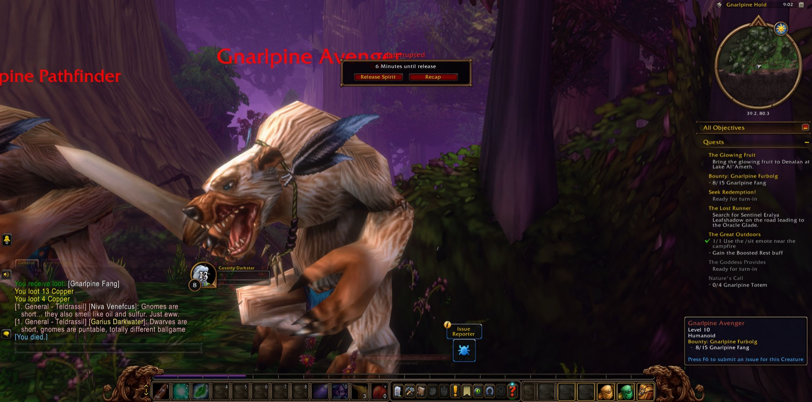
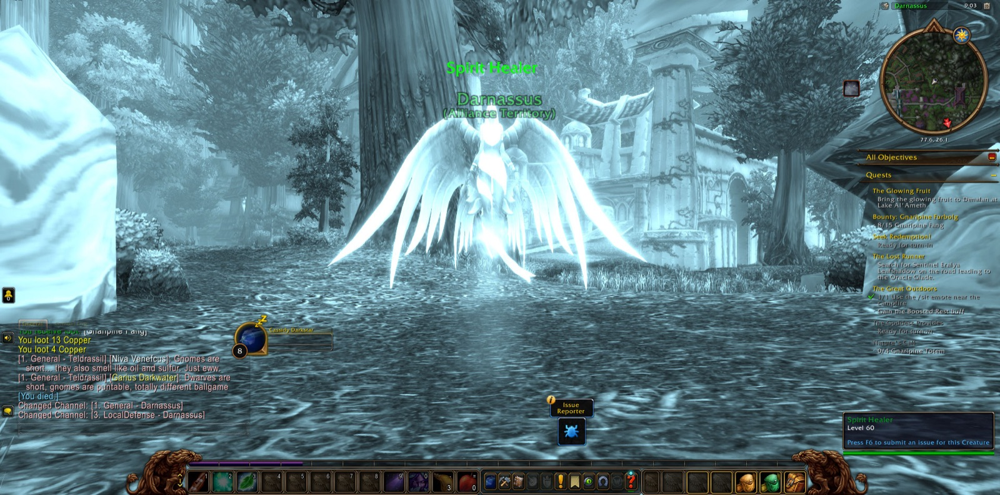
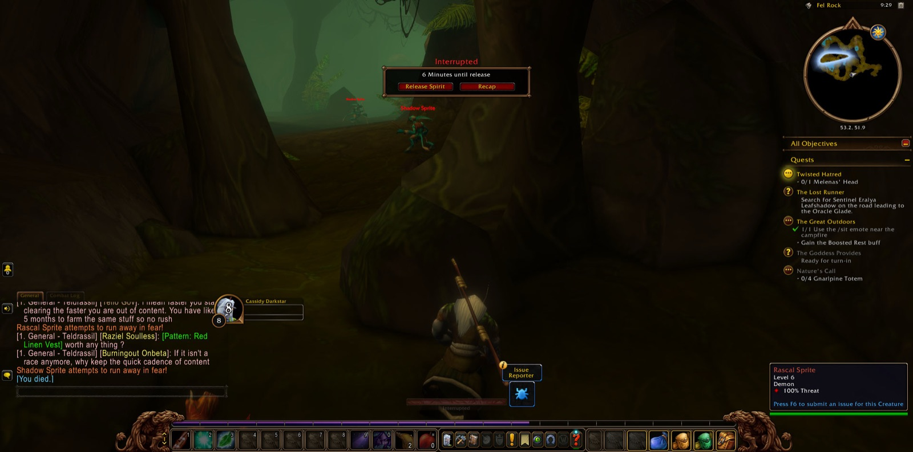
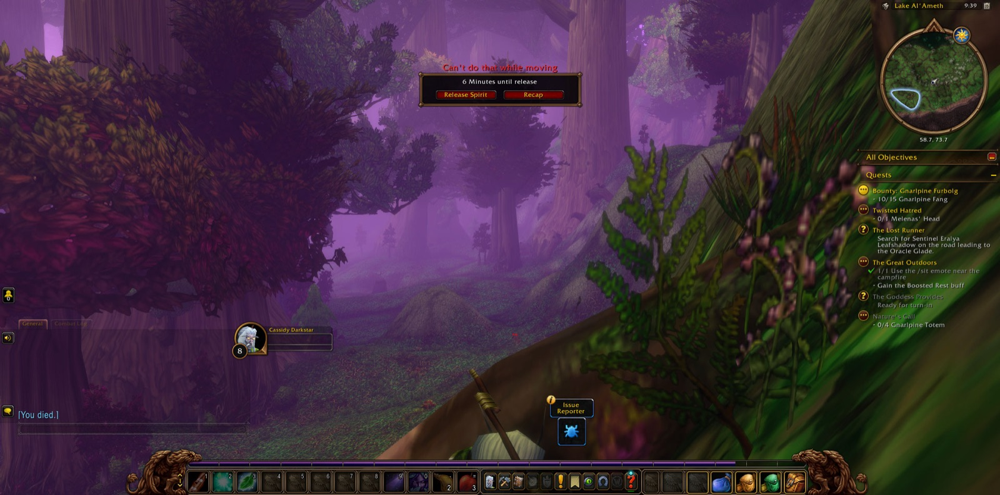
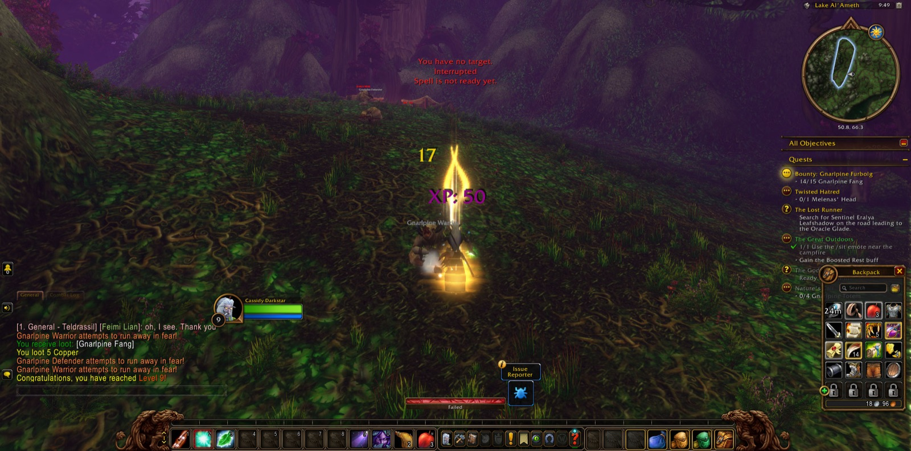
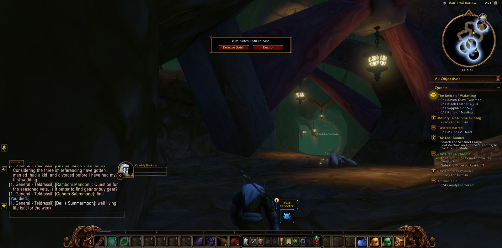
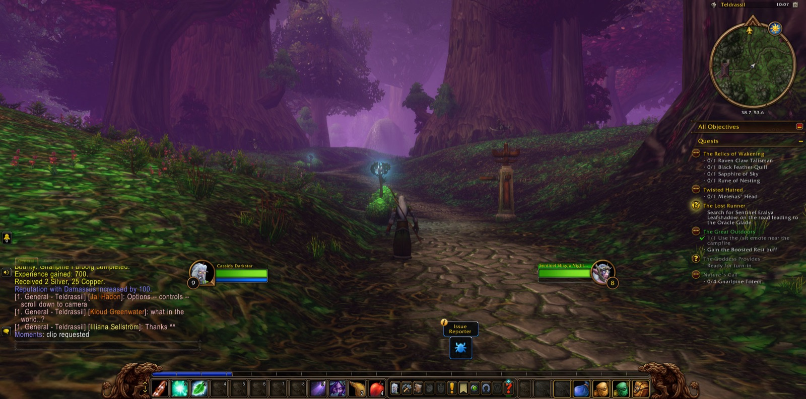
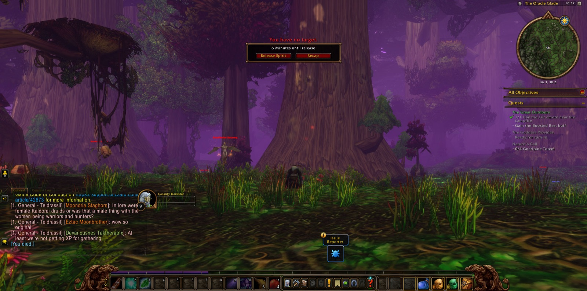
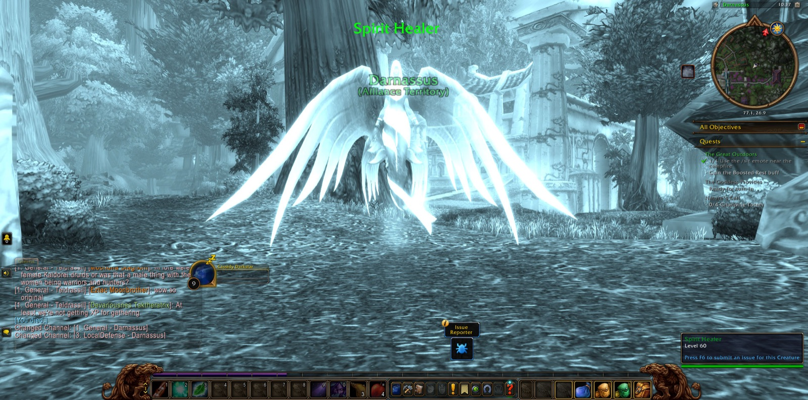
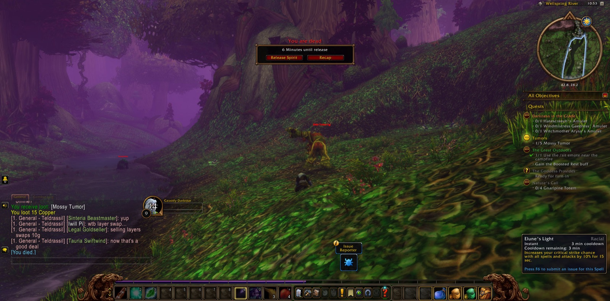
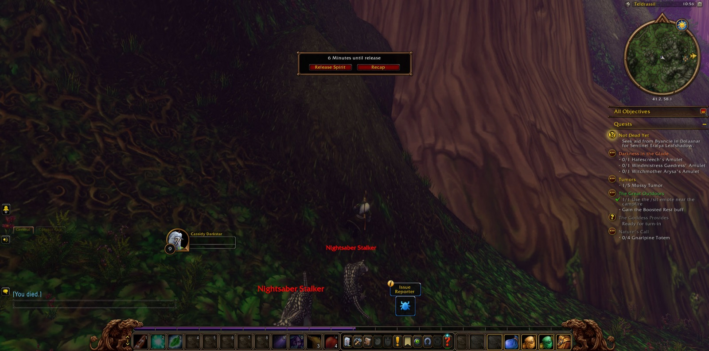
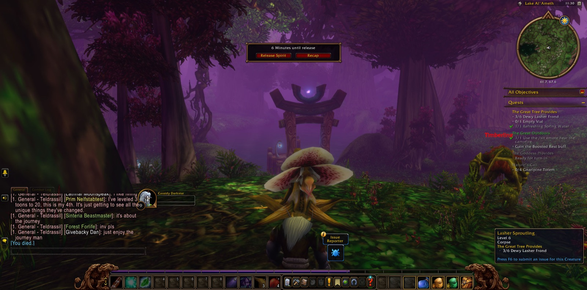
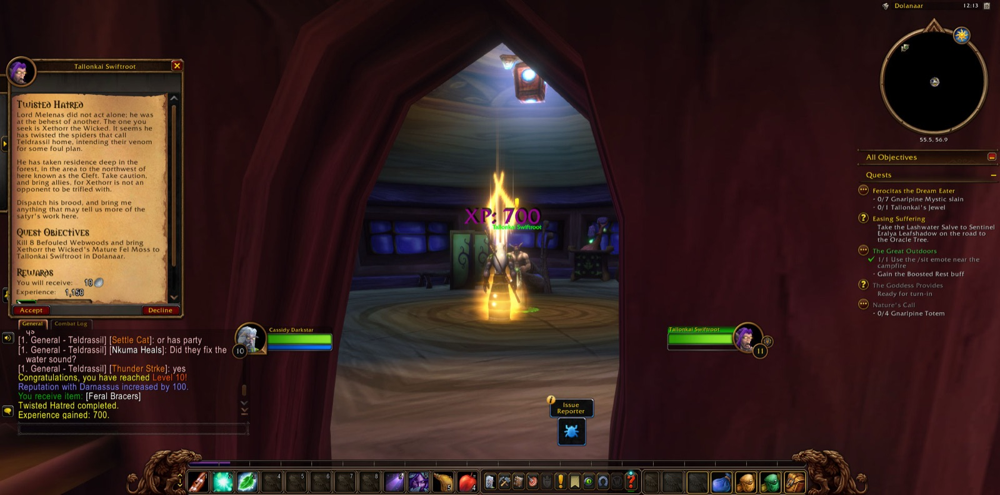
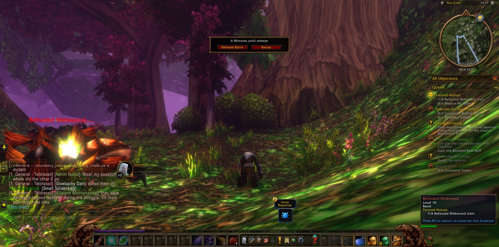
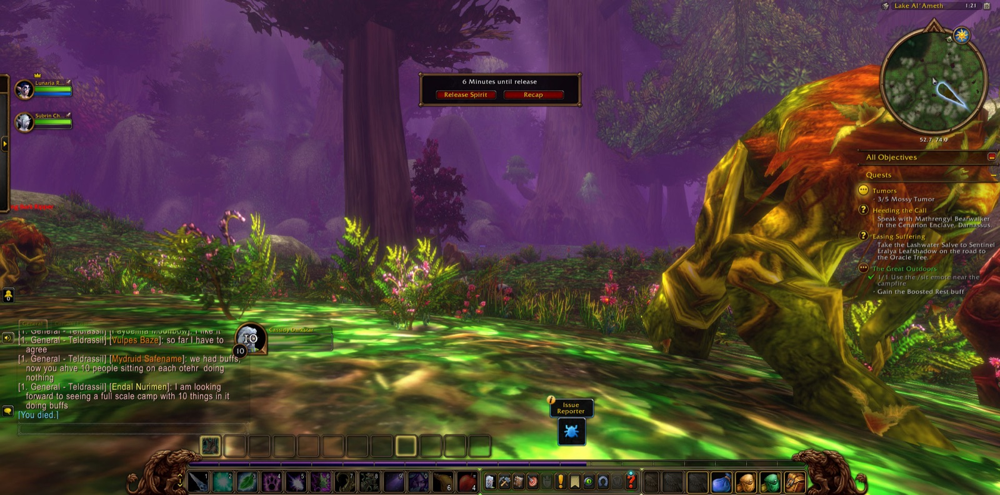
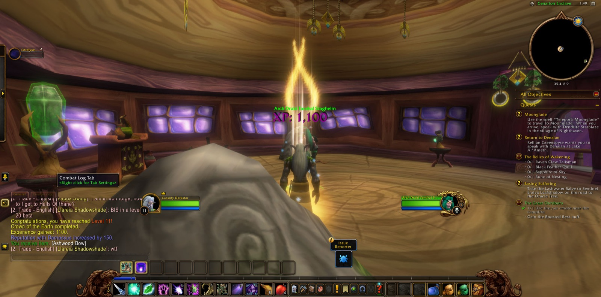
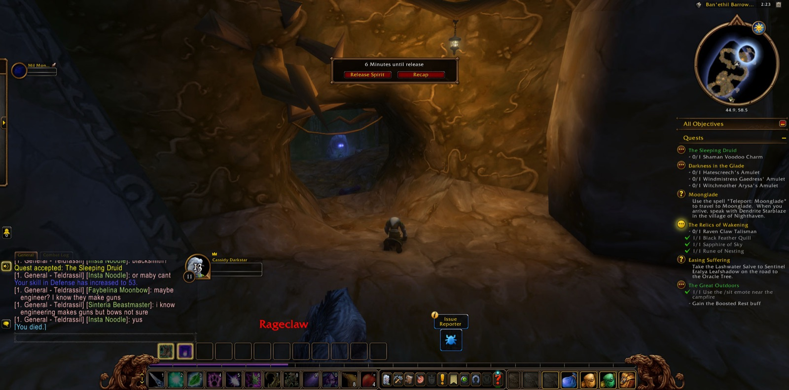
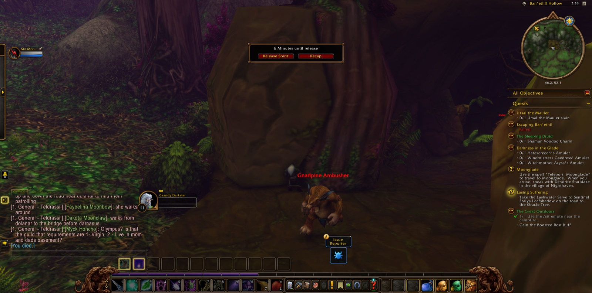
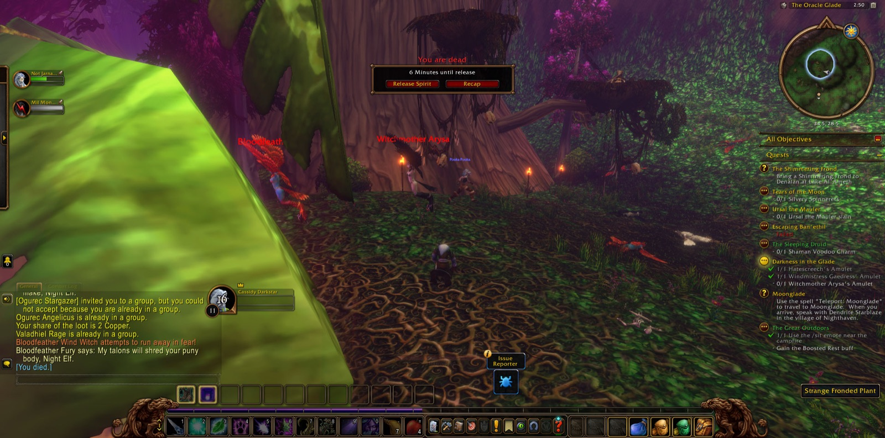